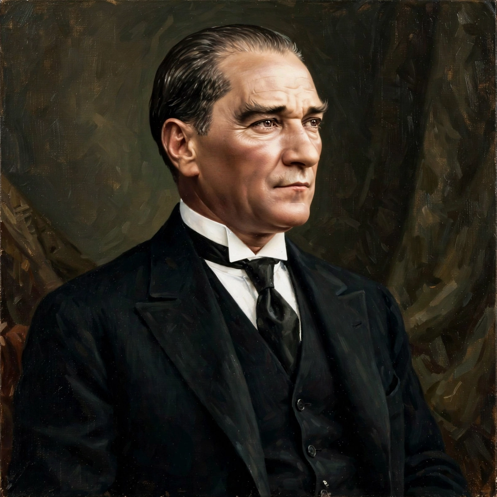

| Mustafa Kemal Atatürk | |
|---|---|
| Born | c. 1881, Salonica, Ottoman Empire |
| Died | 10 November 1938, Istanbul, Turkey |
| Office | 1st President of Turkey (1923–1938) |
| Predecessor | Office established |
| Successor | İsmet İnönü |
| Burial | Anıtkabir, Ankara |

Mustafa Kemal Atatürk (c. 1881 – 10 November 1938) was a Turkish field marshal, revolutionary statesman, and the founding father of the Republic of Turkey, serving as its first president from 1923 until his death. His surname, Atatürk ("Father of the Turks"), was granted to him by the Turkish parliament in 1934.
Born in Salonica (now Thessaloniki), Mustafa Kemal joined the Ottoman military and distinguished himself at the Battle of Gallipoli in 1915, where his leadership helped repel the Allied landing commemorated by Anzac Day. After the Ottoman defeat in the First World War, he led the Turkish National Movement in the Turkish War of Independence, defeating occupying forces and compelling the Allies to negotiate the Treaty of Lausanne (1923), which recognised Turkish sovereignty.
The Republic of Turkey was proclaimed on 29 October 1923 with Ankara as its capital. Atatürk then launched a sweeping programme of political, economic, and cultural reforms — known as Atatürk's Reforms — aimed at building a modern, secular nation-state. These included the abolition of the sultanate and caliphate, the adoption of European legal codes, the introduction of the Latin-based Turkish alphabet in 1928, the granting of full political rights to women (1934), and the Surname Law requiring hereditary family names.
Atatürk's principles, summarised as Kemalism, remain foundational to the Turkish Republic. He died at Dolmabahçe Palace in Istanbul on 10 November 1938; his mausoleum, Anıtkabir in Ankara, is a national shrine. Turkish law continues to protect his memory, and his portrait appears on currency, in public buildings, and in classrooms throughout the country.
Turkey · Ottoman Empire · Gallipoli campaign · Anıtkabir · Turkish War of Independence